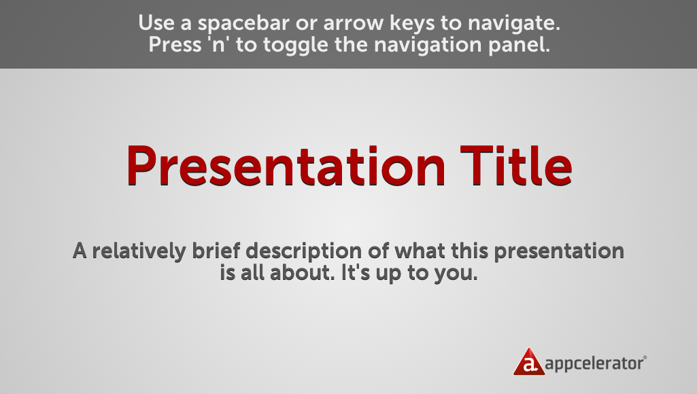
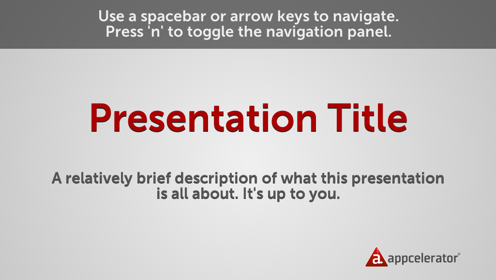

Presentation
Crash Course
Learn how to create your own or modify the existing dynamic Titan Toolkit presentations
Appcelerator Developer Relations Team

Before getting started, BIG thanks to the projects that made this possible:
- impress.js - HTML5/JS presentation framework
- l10n.js - JS localization library
- SyntaxHighlighter - JS syntax highlighter
- jQuery - if you need a description...
First thing's first, get the Toolkit
appcelerator-titans/Toolkit
or cut to the chase:
appcelerator-titans/Toolkit
or cut to the chase:
git clone https://github.com/appcelerator-titans/Toolkit
Create your own presentation based on the template
cd Toolkit/presentations
cp -r template YOUR_PRESENTATION_NAME
cd YOUR_PRESENTATION_NAME
Now fire up
Toolkit/presentations/YOUR_PRESENTATION_NAME/index.html
in a supported browser
Safari | Chrome | Firefox (10)
You should see something like this:


Open up index.html in an editor, and you'll find that each "step*" is a self-contained <div> in the HTML. This makes it easy to create a flow.
"Steps" are created by assigning the step class to an element, while inside the main <div id="impress"></div> element.
*in impress.js, "slides" === "steps"